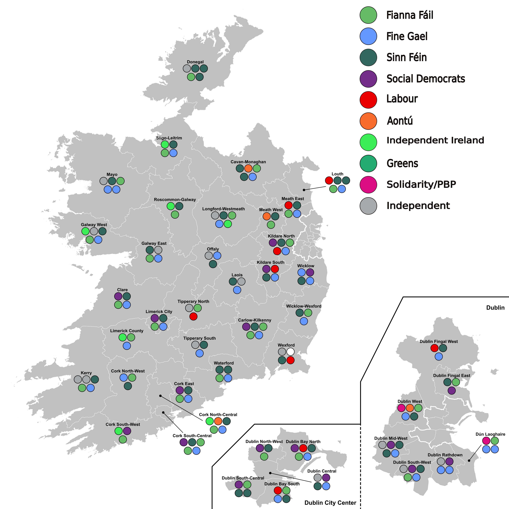

Last Updated: 2 November 2025
| Party | Projected Seats | Projected Votes | 2024 Seats | 2024 Votes |
|---|---|---|---|---|
Sinn Féin |
45 |
23.1% |
39 |
19.0% |
Fine Gael |
38 |
19.2% |
38 |
20.8% |
Fianna Fáil |
35 |
18.2% |
48 |
21.9% |
Social Democrats |
17 |
7.8% |
11 |
4.8% |
Independents/Others |
16 |
15.5% |
17 |
13.0% |
Labour |
9 |
4.7% |
11 |
4.7% |
Independent Ireland |
7 |
4.3% |
4 |
3.6% |
Aontú |
4 |
4.5% |
2 |
3.9% |
Solidarity/PBP |
2 |
2.9% |
3 |
2.8% |
Greens |
0 |
2.4% |
1 |
3.0% |
